A Short Tour of the Elastic Stack
Tyler Langlois
Software Engineer @ Elastic
2 August, 2018
whoami
- Devops/software engineering at Elastic
- Been tinkering on Elasticsearch since 0.17
Would love to talk to you about ARM, birdwatching, tech in Boise, and my dog Morty
I also collect GIFs, send me your high-quality links pls

Overview
The Elastic Stack
What is it?
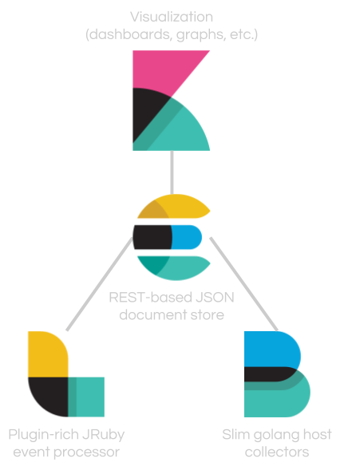
- The open source software stack that brings data into Elasticsearch and turns that data into useful information (open core, some features behind paid licensing)
- The software I'll talk about is what we put out to the community, but many other third-party integrations are out there
Components
- Elasticsearch
- Data store, distributed, REST API
- Logstash
- Swiss-army-knife with plugins for all types of data munging
- Kibana
- Browser-based frontend to turn data in Elasticsearch into useful visualizations
- Beats
- Specialized agents that serve a single purpose (more on that later)
Elasticsearch
- REST-ful API
- Distributed nature, both for high availability and performance
- OSS Java project on GitHub, feel free to contribute!
What does it look like?
GET /
{ "name" : "master-0", "cluster_name" : "global-elasticsearch", "cluster_uuid" : "L8UMCuJrSsCBjz1tc_38vw", "version" : { "number" : "6.2.3", "build_hash" : "c59ff00", "build_date" : "2018-03-13T10:06:29.741383Z", "build_snapshot" : false, "lucene_version" : "7.2.1", "minimum_wire_compatibility_version" : "5.6.0", "minimum_index_compatibility_version" : "5.0.0" }, "tagline" : "You Know, for Search" }
Query Example
Q: "How many DNS requests have I sent in the last 10 minutes?"
GET _search { "size": 0, "query": { "bool": { "must": [ {"range": {"@timestamp": {"gte": "now-10m"}}}, {"term": {"netflow.dst_port": 53}}, {"term": {"netflow.src_addr": "192.168.1.183"}} ] } } }
{ "took" : 80, "timed_out" : false, "_shards" : { "total" : 20, "successful" : 20, "skipped" : 0, "failed" : 0 }, "hits" : { "total" : 123, "max_score" : 0.0, "hits" : [ ] } }
A: 123
(These examples are taken from the logstash netflow module)
Architecture
Simple node architecture (what I run at home)
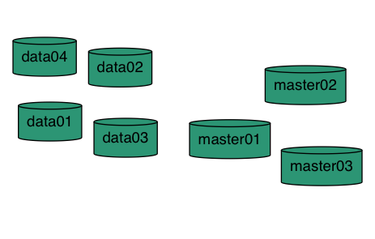
Use Cases
- Search
- Freetext, suggestions, synonyms, languages, etc.
- Logging
- Modern Elasticsearch can accept your logs in any form and parse in-cluster
- Field data types make for powerful searching (CIDR notation for IPs, average/percentile for duration/latencies)
Use Cases (cont'd)
- Metrics
- Metricbeat + Elasticsearch for host-level monitoring
- We use this internally to monitor latency and performance for public-facing services
Heartbeat Monitoring
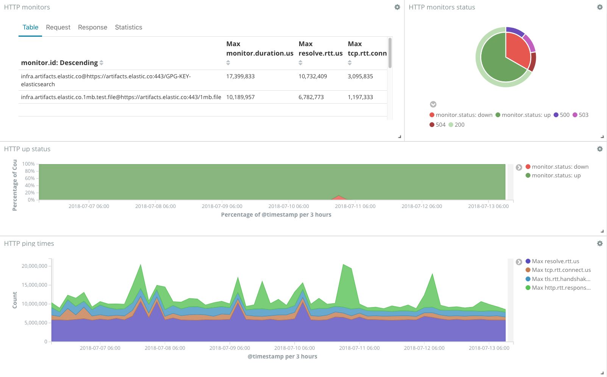
Interested?
- Can you use it?
- If you've got data in JSON form, you can use Elasticsearch
- Unless you're coding in assembly or Fortran, there's probably a library for you
- (I originally wrote "erlang", but nope, it exists)
Interested?
- Where will it shine?
- "Where can we collect and centralize logs for analytics?"
- "What sits behind the search box on our web site?"
- "How do we make this raw text and metric data useful?"
Logstash
- Generic tool for collecting, transforming, and loading data
- Strength lies in its flexibility and suite of plugins and modules
- Not Elasticsearch-specific, can load data into a variety of sinks
Example Configuration File
input { stdin { } } # Your plugins go here output { stdout { codec => rubydebug } }
Output
Hello, world! { "@version" => "1", "message" => "Hello, world!", "@timestamp" => 2018-07-13T21:20:15.206Z, "host" => "tylasticsearch.lan.tyjl.org" }
It's about the plugins
Designed to be easily extensible and flexible
Plugins exist for:
- Typical machine data (logs, metrics, commands, etc)
- Data transformation (GeoIP lookups, sentiment analysis, parsing, etc.)
- Ingestion of all kinds:
- Social media (twitter, reddit, rss, …)
- Other systems (beats, kafka, JDBC, etc.)
Extensibility
- I wrote a sentiment analysis plugin for social media that took part of a Saturday to write, it's easy!
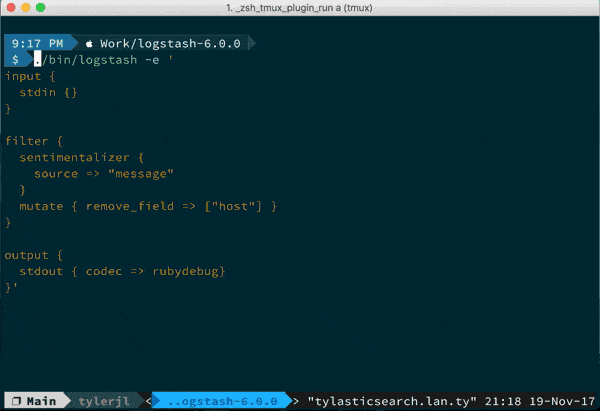
You can munge data pretty much any way with filters
Beats
- Single-purpose-built, highly focused tools designed for ease and speed
- Most tools take one form of input (file, metrics, API, etc.) and ship to Elasticsearch
There are many different types of Beats, here are a few:
Filebeat
- Tail any sort of file, minor parsing/processing, and ship to Elasticsearch/Logstash/Kafka/Redis/etc.
- Common use case is collecting webserver logs for later analysis in Kibana
- Handles file position, backpressure, etc.
Metricbeat
- Collects various types of system-level metrics
- CPU load, memory use, network activity, disk input/output, and so on
- We dogfood this heavily and use it every day (alerts for disk, etc.)
Aside: Metrics
Elasticsearch is a document store, but you can query metrics? (!textual data)
It's true Elasticsearch excels at freetext search (wildcards, autocomplete, aggregations, etc.)
Lucene (the underlying library) also supports data types other than textual
- Numeric (to perform averages, max values, sum all fields, etc.)
- GeoIP data types (longitude/latitude) that can be easily used in Kibana to chart maps
- Even IP ranges are native to support search for CIDR ranges (I do this at home)
Winlogbeat
I don't use Windows, but I hear it's good?
Heartbeat
- It's like a build-your-own web site monitoring system (I'm a fan)
- Watch a site, collect response time/uptime metrics, and dashboard/alert on uptime
Config File
heartbeat.monitors: - type: http schedule: '@every 5s' urls: ["https://tjll.net"] check.response.status: 200
Dashboard
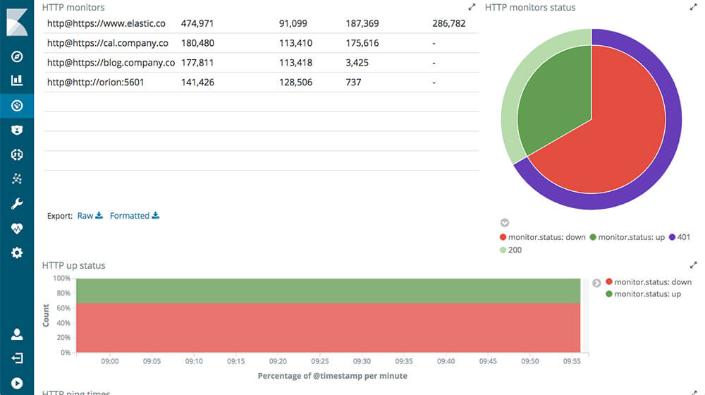
Modules
- Take Beats one step further by pre-loading all the requisite parsing steps, file paths, and necessary configs
- Also available for Logstash
Filebeat: Apache2 Module
The apache2 Filebeat module already knows what files to watch, what regex to use, and how to enrich web logs with GeoIP data and more.
- module: apache2 access: enabled: true
Metricbeat: Docker Module
Capture all sorts of metrics for all containers automatically
metricbeat.modules: - module: docker metricsets: - "container" - "cpu" - "memory" hosts: ["unix:///var/run/docker.sock"] period: 10s enabled: true
Kibana
Turns the data inside Elasticsearch into an easily used form.
Dashboards and visualizations - tables, line charts, heat maps, geographical maps, histograms, and more.
Operational Details
- Stateless - dashboards are stored with Elasticsearch itself.
- Node project, plugins and extra visualization types are built as components
What does it look like?
Metricbeat
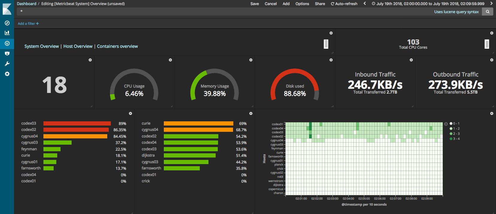
Web logs
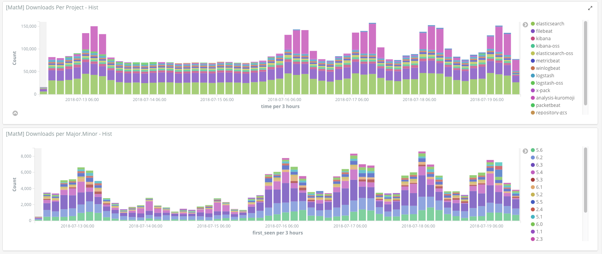
Kubernetes statistics
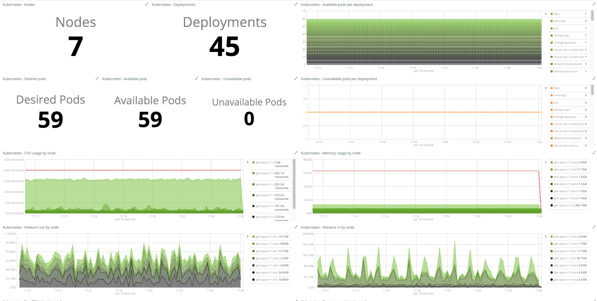
Story Time
Social Media Data
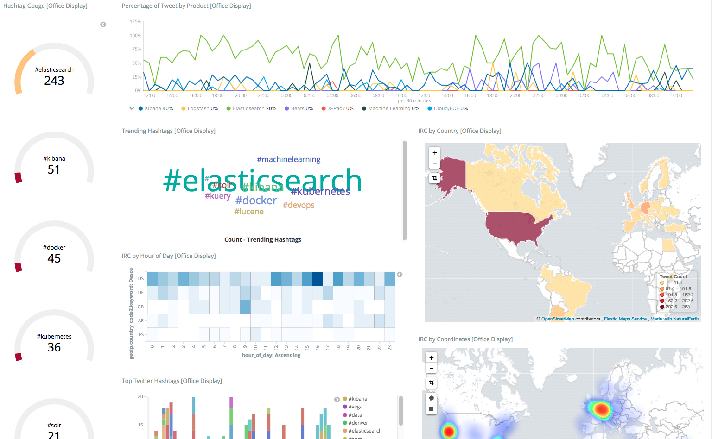
Netflow
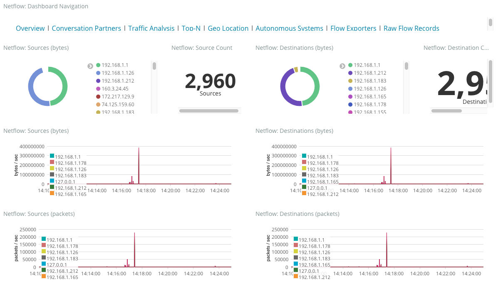
Netflow
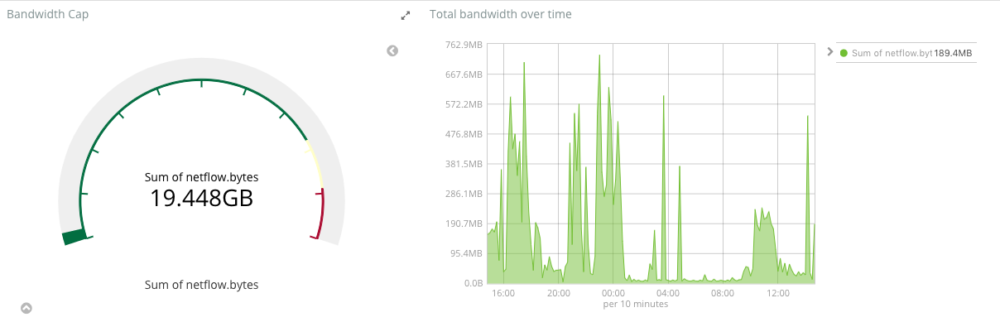
Host Monitoring
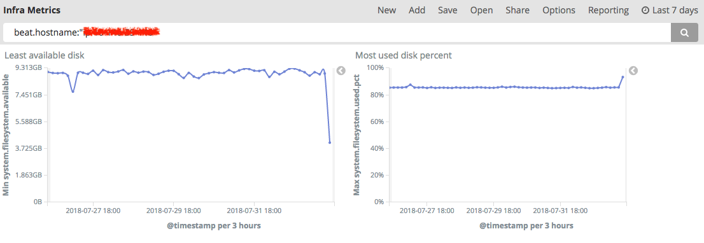
Q&A
- Helpful links:
- Get some stickers to ruin your laptop with
- Questions?